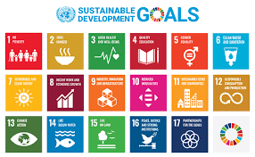
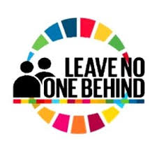

SDGS
SDGs, atau Sustainable Development Goals, adalah agenda global yang disepakati oleh negara-negara anggota PBB pada tahun 2015
untuk mendorong pembangunan berkelanjutan hingga 2030. Agenda ini mencakup 17 tujuan utama yang berfokus pada aspek sosial,
ekonomi, dan lingkungan, seperti penghapusan kemiskinan, pengentasan kelaparan, pendidikan berkualitas, kesetaraan gender,
serta pelestarian lingkungan.
TUJUAN
Tujuan utama SDGs adalah mencakup berbagai aspek kehidupan, seperti menghapus kemiskinan ekstrim dan mengurangi kesenjangan sosial-ekonomi di seluruh dunia.
Selain itu, SDGs juga berfokus pada penyediaan pendidikan berkualitas, peningkatan akses terhadap layanan kesehatan, dan penciptaan lapangan kerja yang layak bagi
semua orang.

SDGs menekankan pentingnya kolaborasi global untuk mencapai tujuan-tujuan tersebut, dengan prinsip "no one left behind,"
yang berarti memastikan semua lapisan masyarakat mendapatkan manfaat dari pembangunan. Setiap negara diharapkan mengambil tindakan
sesuai prioritas nasional mereka, tetapi tetap berkontribusi pada tujuan bersama.
Implementasi SDGs melibatkan berbagai pihak, termasuk pemerintah, sektor swasta, masyarakat sipil, dan individu, yang bekerja sama
untuk menciptakan solusi inovatif dalam mengatasi tantangan global.
